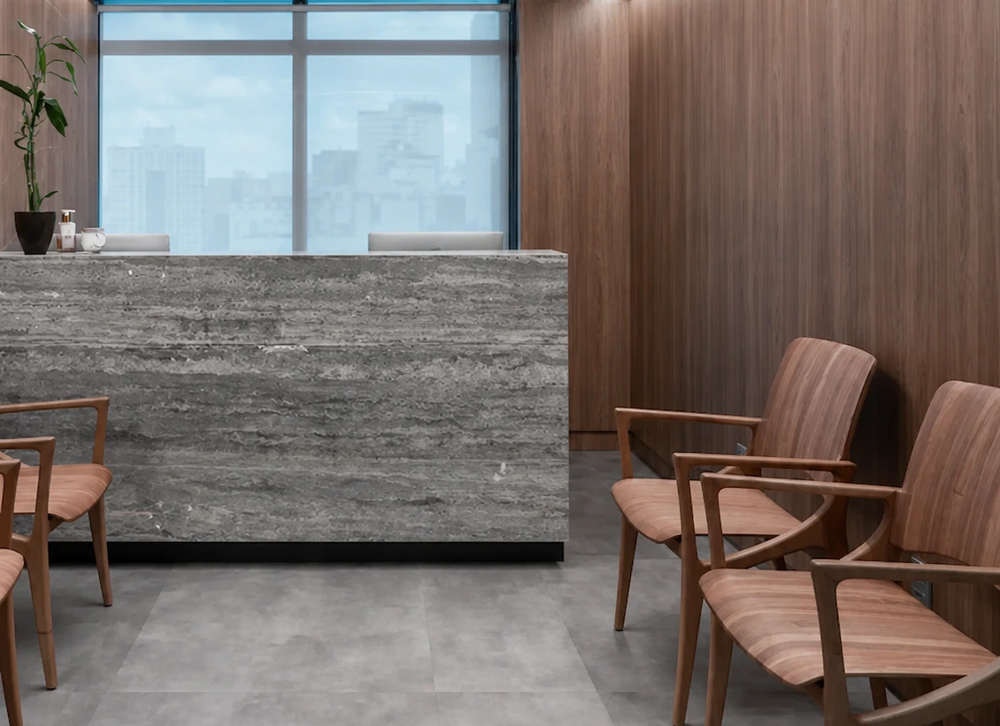
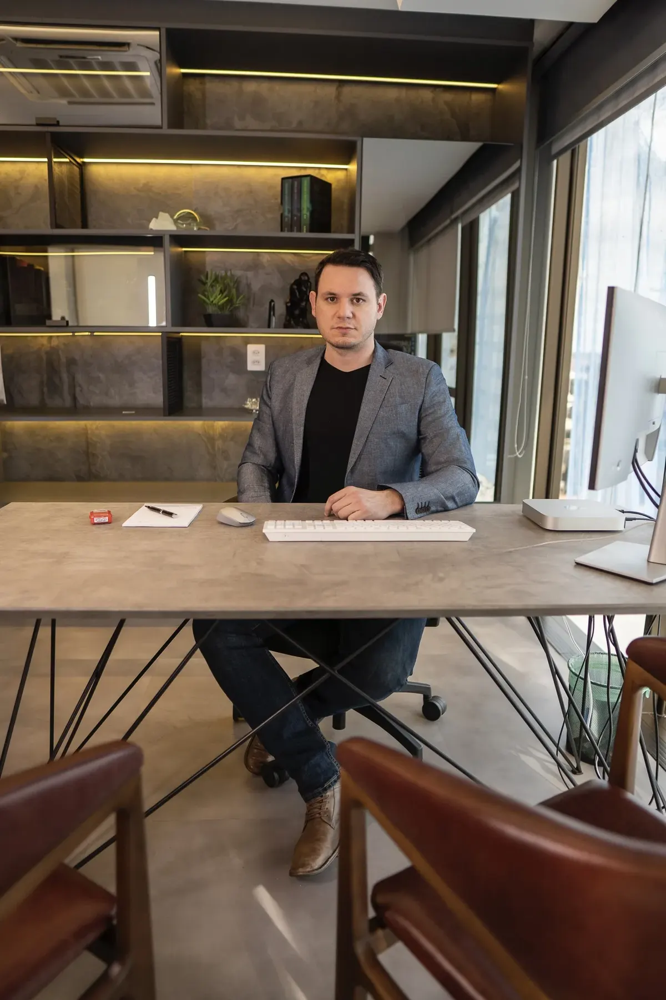
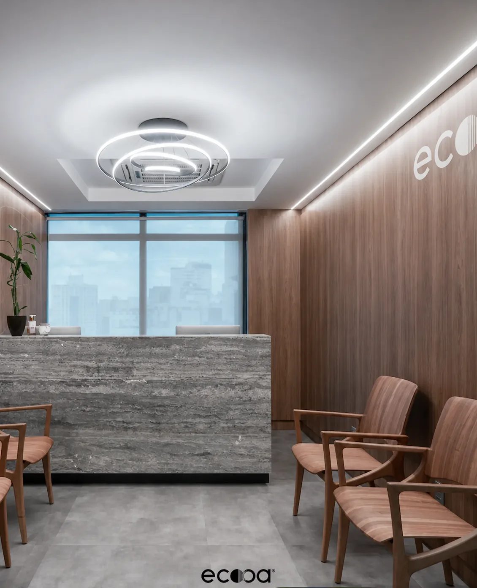
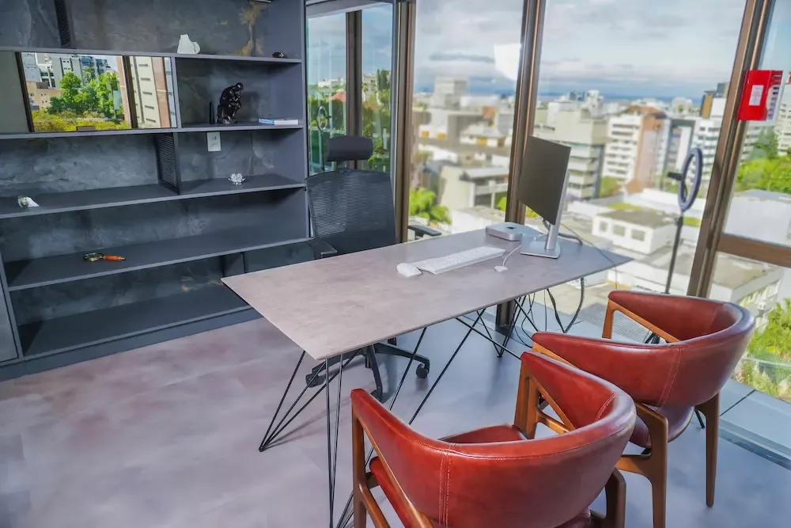
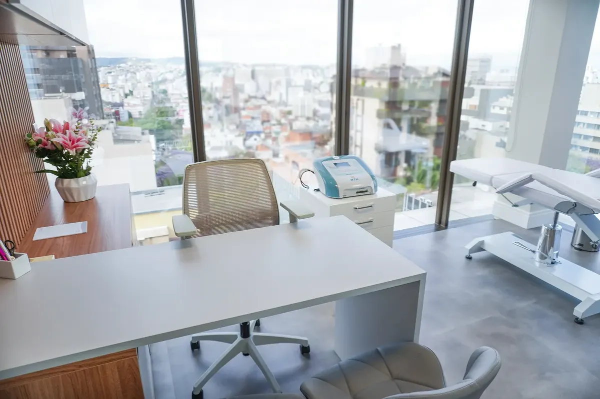
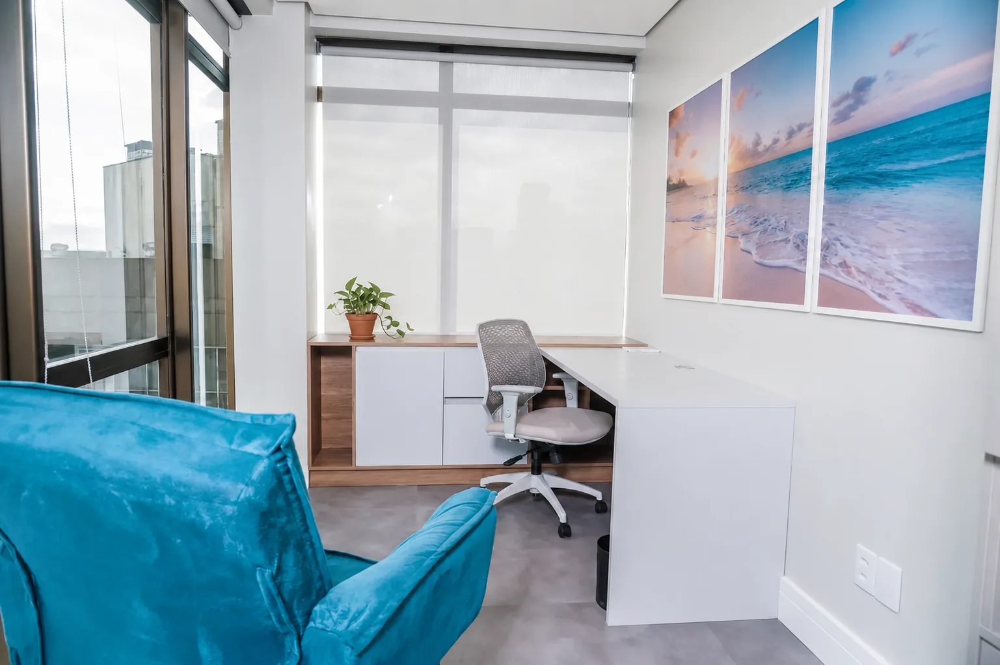
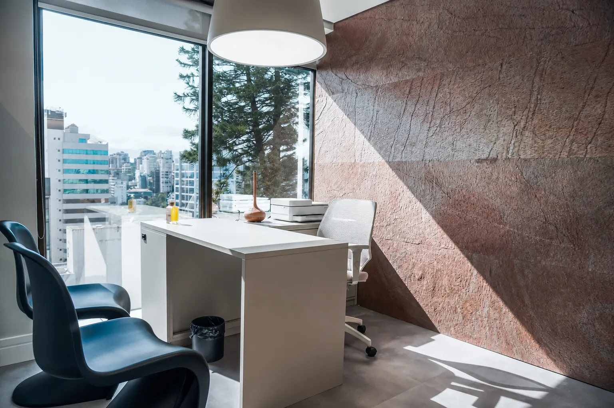
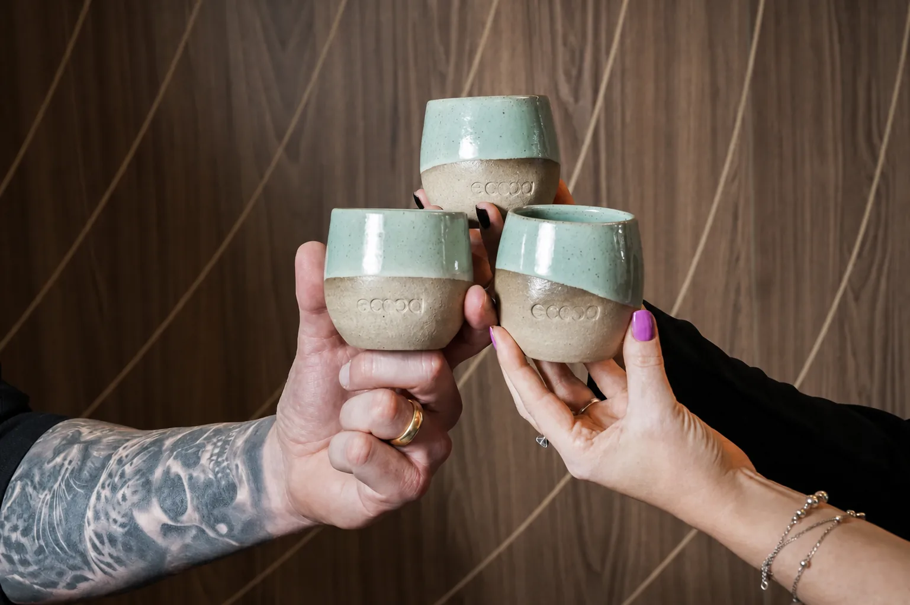
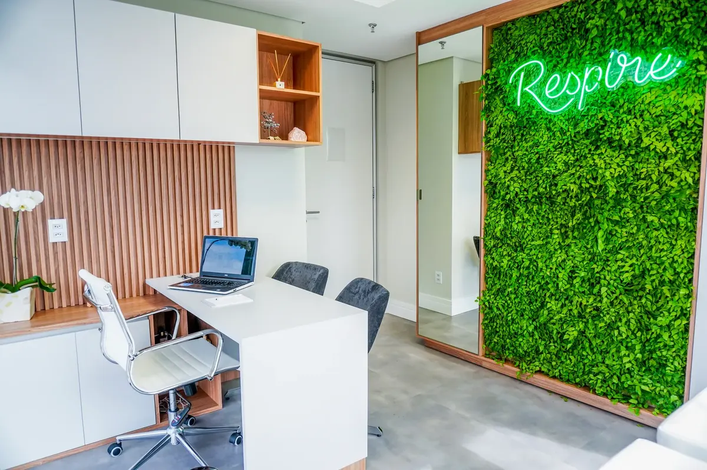
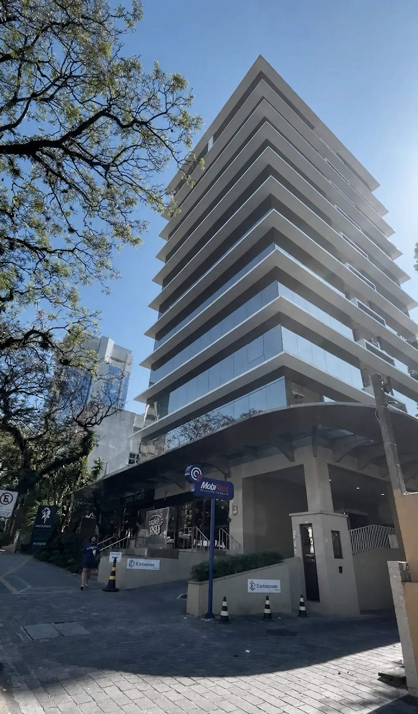

Escolher com critério já é cuidar.
Saúde, estética e longevidade conduzidas por profissionais independentes que dividem o mesmo padrão de ética e de excelência. Você chega com o que dói. Sai com um plano.
Rua Mariante, 180 · 9º andar · Moinhos de Vento


Mais de 30 profissionais. Um mesmo padrão.
A ecooa não é um consultório que cresceu. É uma clínica multidisciplinar em Moinhos de Vento, Porto Alegre, construída para reunir especialistas autônomos que já são bons no que fazem, e oferecer a eles contexto, estrutura e hospitalidade à altura do próprio trabalho.
Medicina, nutrição, psicologia e estética integradas em um só endereço, com atendimento presencial e online. Saúde, estética e longevidade tratadas por quem conversa entre si, e não em salas isoladas.
Para quem chega com uma dor, isso significa uma coisa simples: a indicação vem de dentro, com critério, e não de uma lista.
Uma marca. Sete portas de entrada.
Medicina, estética, nutrição, saúde mental, saúde integrativa e desenvolvimento profissional: cada expressão da ecooa cuida de uma dimensão da sua saúde, no mesmo endereço em Moinhos de Vento e com o mesmo critério. Você escolhe a porta de entrada, e as áreas conversam entre si quando o seu cuidado pede mais de um olhar.
Cinco movimentos entre a sua dúvida e uma direção confiável.
Pessoas, antes de especialidades.
Trinta e um profissionais autônomos, de nove classes diferentes, reunidos pelo mesmo critério. Passe o mouse para ver quem é.Toque para ver quem é.
Cada um responde tecnicamente pelo próprio trabalho. O que eles dividem é o critério de indicação.
ver todos os profissionaisNão sabe por onde começar. A gente organiza com você.
Descreva com as suas palavras o que você procura, ou responda algumas perguntas curtas. Nos dois caminhos você recebe uma leitura do que entendemos, os caminhos possíveis e quem atende cada um deles.
Orienta a escolha e não substitui uma consulta. Nenhum diagnóstico é feito aqui.
começar a buscaO que você procura?
Um andar inteiro pensado para o tempo da consulta.
Travertino, madeira real, luz que entra e a cidade ao fundo. Nove salas equipadas, uma recepção que acolhe sem pressa e café moído na hora.
como chegar →







Um endereço à altura do trabalho que você já faz.
Sublocação de salas para profissionais autônomos de saúde e estética, com secretaria, hospitalidade, endereço em Moinhos de Vento e uma comunidade que indica por competência.
Antes de qualquer proposta, uma conversa de compatibilidade. O ecossistema só funciona quando o padrão é comum.
conhecer a sublocaçãoFormação para quem atende, conduzida por quem atende.
Mentorias e cursos construídos a partir da prática real de consultório, com o mesmo padrão de excelência que orienta toda a clínica.
Com Jessica Stein, sócia e diretora de ensino.
ver as mentoriasLeituras que ajudam a decidir.
Chegue com o que dói. Saia com um plano.
A primeira conversa serve para entender o seu momento e apontar o caminho. Sem pressa e sem empurrar procedimento.